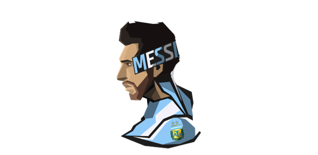

a drawing of lionel
Lionel Messi
1987 Born in Rosario, Argentina to Celia Maria Cuccittini and Jorge Messi.
1994 Messi joined the league of Newell Old Boys.
1999 Messi was diagnosed with a growth defect and couldn't affort treatment.
2000 Lionel Messi recieved a trial run at the FC Barcelona, he also moved to spain to get treatment paid for by the club.
2003 First appearance with Barca in a friendly match against FC Porto.
2005 Became the youngest play to score a goal for the FC Barcelona.
2007 created The Leo Messi Foundation to help support disadvanteged children.
To learn more about Messi's achievment with Barca and Argentina
Click Here